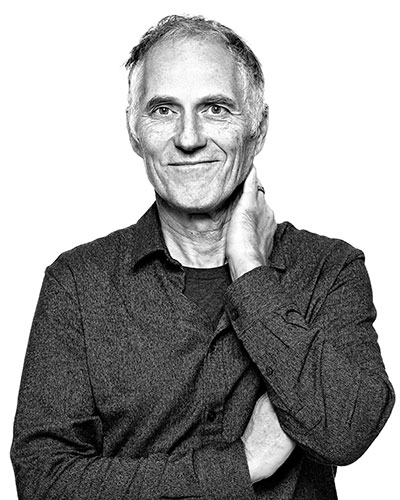
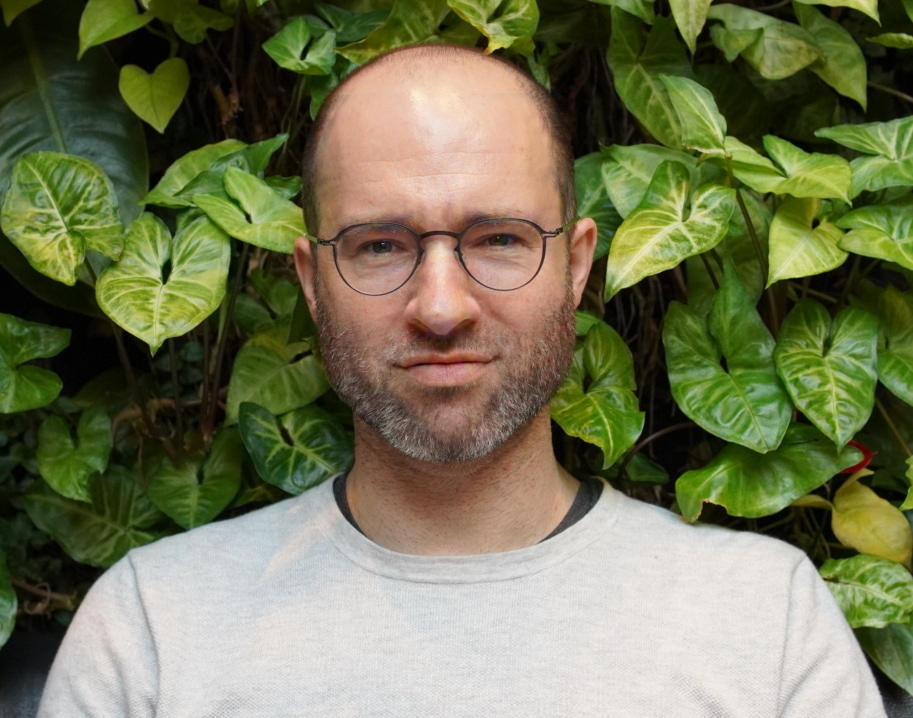
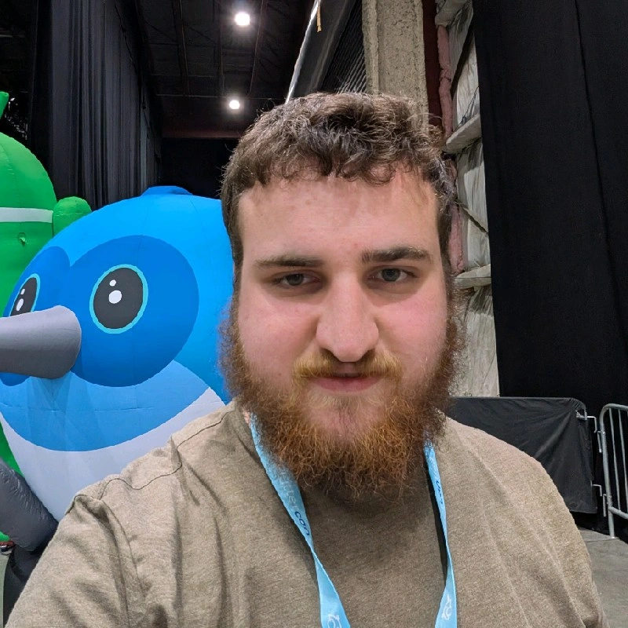

People

Tim O'Reilly
Founder and Co-Director, AI Disclosures Project
Tim O'Reilly is the founder of O'Reilly Media and Co-Director of the AI Disclosures Project. A pioneer in the open source and Web 2.0 movements, Tim's current focus is on the impact of algorithms on society, governance of AI platforms, and the intersection of technology and economic policy.
Affiliations
- Founder and CEO, O'Reilly Media

Ilan Strauss
Co-Director, AI Disclosures Project
Dr. Ilan Strauss is the Co-Director of the AI Disclosures Project. He holds a Ph.D in economics from the New School for Social Research (New York). He is an Honorary Senior Research Fellow at UCL's Institute for Innovation and Public Purpose and a Visiting Professor at the University of Johannesburg. His current research interests are the economic impacts of different computer architectures, and macroeconomic theories of technology & employment.

Sruly Rosenblat
Technical Researcher, AI Disclosures Project
Sruly Rosenblat is a researcher with the AI Disclosures Project. He holds a Computer Science degree from Hunter College and conducts research on membership inference attacks and methods for detecting training data in large language models.
Research Focus
- Membership Inference Attacks
- LLM Training Data Detection
- AI Transparency Methods
Education
- B.S. Computer Science, Hunter College
Links
- Anna Tumadóttir (CEO, Creative Commons)
- Erika Augustine (Executive Director, The David Prize)
- Daniel Goroff (ex officio, Vice President and Program Director, The Alfred P. Sloan Foundation)
- Tim O'Reilly (O'Reilly Media & AI Disclosures Project)
- Ilan Strauss (AI Disclosures Project)
- Alfred P. Sloan Foundation (2024 – 2025)
- Omidyar Network (2024 – )
- Patrick J. McGovern Foundation (2024 – )